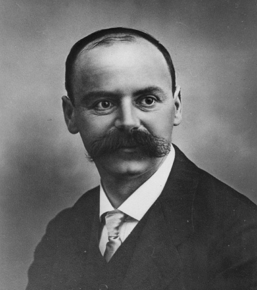
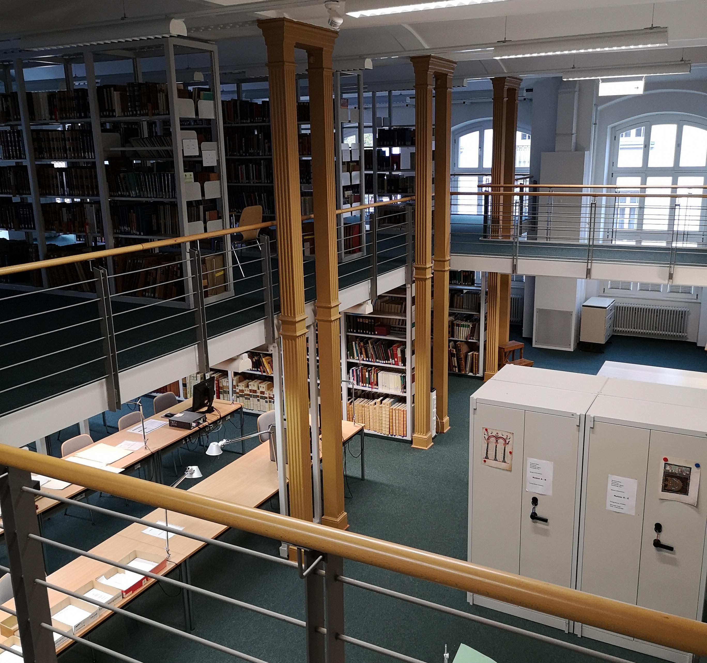
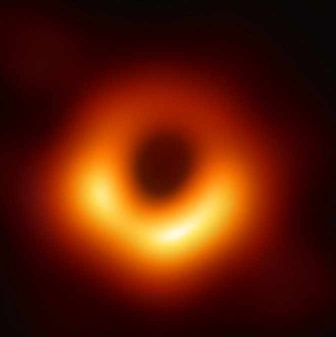
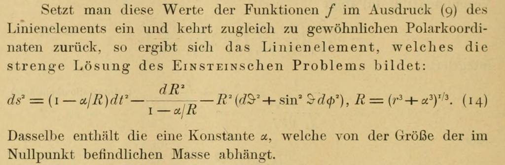
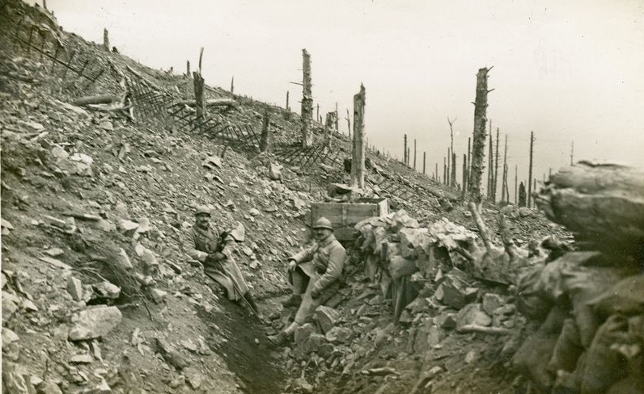

göttingens svarta hål
När första världskriget bröt ut anmälde sig den tyske astronomen Karl Schwarzschild som frivillig till
armén. Under
pauser vid fronten försökte han lösa Einsteins nya ekvationer. Han hittade något oväntat: den matematiska
beskrivningen
av svarta hål. Hösten 2019 åkte jag till Göttingen i Tyskland för att ta reda på hur det gick till.
Av Jonas Enander | 9 december 2019
När första världskriget bryter ut den 28 juli 1914 arbetar den tyske astronomen Karl Schwarzschild som
föreståndare för
det astronomiska observatoriet i Potsdam utanför Berlin. Han är en respekterad företrädare för den tyska
vetenskapen,
med en diger lista av publikationer och observationer bakom sig.
Trots sin vetenskapliga ställning känner han sig inte helt delaktig i det tyska samhället. Anledningen var
antisemitismen. När han gjorde militärtjänst var det omöjligt att nå en högre rang, eftersom den preussiska
armén inte
tillät judar att bli officerare. Hindren och kritiken av de olika judiska grupperna var ett återkommande
problem.
I kriget såg Schwarzschild en möjlighet. Trots sina 40 år anmälde han sig som frivillig till armén. Han
ville bekämpa
antisemitismen med patriotism. Genom att visa att han var beredd att dö för nationen hoppades han att de
icke-judiska
tyskarna skulle respektera honom och hans gelikar.
I armén var hans kunskaper efterfrågade. Astronomiska färdigheter – minutiösa optiska observationer,
förutsägelser av
komet- och planetbanor, kännedom om atmosfäriska förhållanden på jorden och i solen – blev militära
färdigheter:
fiendeobservationer, beräkningar av artilleriprojektilers banor, meteorologiska förutsägelser.
Militärledningen placerade Schwarzschild vid en väderstation i Namur i Belgien. Men han ville närmare
striderna och
begärde förflyttning till en artillerienhet. Där beräknade han hur temperatur, vind och fuktighet i luften
påverkade
artilleriets träffsäkerhet. Han publicerade sina beräkningar i en rapport som militärledningen
hemligstämplade.

Karl Schwarzschild (1873-1916), tysk astronom som upptäckte den matematiska formuleringen av svarta
hål.
Men det är inte för sina militära bidrag som Schwarzschild är känd för eftervärlden. Från Berlin nås han av
nyheten att
Einstein har formulerat en ny teori för hur gravitation fungerar. Schwarzschild får tag på Einsteins
artiklar. Under
lediga stunder försöker han lösa de nya ekvationerna. I gyttjan av stridigheter, militära sifferexerciser
och
skyttegravarnas blandning av död och vardagstristess lyckas han.
Och han upptäcker något oerhört: den matematiska formeln för ett svart hål.
Mot arkivet
När jag läser om Schwarzschilds öde vill jag veta mer. Jag skriver en bok om svarta hål, och Schwarzschild är
den förste
att skriva ner formeln för dem. Vad tänkte han när han gjorde sina beräkningar? Exakt var befann han sig?
Hur
kunde han ha
tid och koncentrationsförmåga att göra avancerade beräkningar vid fronten?
Många är fascinerade av dessa mystiska objekt. Jag tror att en av anledningarna – utöver det vetenskapliga
intresset –
är att de påminner om mytologiska föreställningar om dödsriket. Det är en plats man kan stiga ner i men
aldrig återvända
från, ett totalt mörker, en plats som lockar med hemligheter dolda i en värld olik allt vi känner till här
på jorden.
Bilden förstärks onekligen av att de svarta hålen upptäcktes i en sådan orgie av död som första
världskriget.
Jag vill veta på exakt vilken plats Schwarzschild befann sig då han upptäckte formeln för svarta hål. Men
Schwarzschilds
liv är inte väldokumenterat. I populärvetenskapliga böcker om svarta hål nämns hans insats bara i
förbigående. Ingen har
skrivit en hel bok om Schwarzschilds liv. I jämförelse så är Einsteins liv analyserat i minsta detalj. Allt
han har
skrivit går att läsa online, otaliga biografier har skrivits om honom och till och med hans hjärna har
dissikerats (och
hans ögon förvaras fortfarande i ett bankfack i New York).
Den längsta genomgången av Schwarzschilds liv hittar jag i ett kapitel i en minnesskrift över hans
vetenskapliga
insatser. Kapitlet är författat av Ignatius Adriaan Raap, nederländsk astronom bosatt i Stuttgart.
Jag mailar Raap. Inleder med ett artigt ”Sehr geehreter herr Raap” och får ett lika artigt ”Sehr geehrter
herr Enander”
tillbaka.
Raap ger mig ytterligare upplysningar om Schwarzschilds liv. Han var stationerad i Litauen, var officerare
och inte
soldat. Han lämnade östfronten mot slutet av 1915 och åkte till västfronten. Schwarzschilds efterlämnade
material finns
i universitetsarkivet i Göttingen (Schwarzschild var föreståndare för stadens observatorium innan han
flyttade till
Potsdam). Men det är svårläst; Schwarzschild skrev med en gammaldags och liten stil. Kanske går det att få
fram mer
information ur arkivet med en portion tålamod.
Det räcker för mig.
Jag vill till Göttingen.
Mappar, mappar, mappar
En tågresa senare står jag vid arkivet för Niedersächsiche Staats- und Universitätsbibliothek. Det ligger i
en pittoresk
byggnad mitt i den mysiga universitetsstaden.

Entrén till Göttingens universitetsarkiv.
En mild nervositet gör mig följe in i byggnaden. Jag har aldrig forskat i arkiv tidigare. Efter att ha mailat
med
arkivarierna innan har jag också fått reda på att arkivet har stängt en av de tre dagar jag är i staden.
Kommer tiden
räcka till för att gå igenom allt material?
Jag går in i arkivet, presenterar mig och blir genast utskickad. Jacka, väska, datorfodral: allt ska in i ett
skåp vid
entrén. Avklädd dessa yttre plagg blir jag slussad vidare till avdelningen för handskrifter och
kvarlåtenskap.
En trevlig arkivarie tar emot mig. Hon öppnar ett grått skåp och tar fram flera gröna mappar. Mapparna
innehåller allt
material som jag har beställt i förväg. Jag får vita handskar, förstoringsglas och ett vinklat stöd för
manuskripten.
Innan jag börjar läsa måste jag skriva under ett kontrakt som förbjuder fotografering och egen distribution
av det
material som universitetet scannar in.

Inuti Göttingens universitetsarkiv.
Schwarzschilds kvarlåtenskap
Jag sätter mig ner och öppnar den första mappen. Två tankar far genom mitt huvud när jag bläddrar bland brev,
anteckningar,
beräkningar, militärmaterial, teckningar. Det ena är hur häftigt det är att läsa hundra år gamla
manuskript, att se en
annan värld träda fram i materialet. Det andra är att jag knappt förstår något av det jag läser. All
handskrift är
skriven på Kurrentschrift, en gammaldags stil som ser bekant ut men samtidigt är annorlunda.
Precis som Raap har varnat är Schwarzschilds handstil liten och svårläst. Hans fru Elses handstil är däremot
yvig och
rapp, och tyvärr lika svårläst. Efter några timmar börjar jag känna igen vissa bokstäver och ord. Jag får
ett
hum om vad det
är de pratar om.
Jag hittar den hemligstämplade militärrapporten. Den publicerades efter kriget. Schwarzschild skriver att
målet med
beräkningarna är att
"reducera [onödig] beskjutning, spara ammunition och att bättre överraska motståndaren
... Det
tunga artilleriet måste bli ett precisionsinstrument."

Schwarzschilds kvarlåtenskap förvaras i gröna mappar i Göttingens universitetsarkiv. I en av mapparna finns
den första beräkningen av ett svart hål.
Jag hittar ett fotografi från 1905. På bilden ser jag Schwarzschild stå vid ett tält i Algeriet. På marken
sitter en
algerisk man, bredvid honom står en av Schwarzschilds kollegor. De hade åkt till Algeriet 1905 för att
observera
en
solförmörkelse. Schwarzschilds familj kallade Karl för ”vilden”, algeriern för ”halvvilden” och Karls
kollega för ”den
civiliserade”. Expeditionerna för att observera solförmörkelser följde tätt i kolonialismens spår. De var
imperialistiska uppvisningsnummer i avancerad logistik och optisk teknologi. Jag läser igenom Schwarzschilds
rapport
från solförmörkelsen. Bilderna är vackra, och den vetenskapliga analysen ytterst noggrann. Jag blir
imponerad över hur
mycket fysik om solens atmosfär de lyckades extrahera ur de – med våra mått mätt – primitiva bilderna.
Hans bror, konstnären Alfred Schwarzschild, skickar humoristiska teckningar till fronten. På en av
teckningarna kastar
Karl astronomiska mätinstrument på fienden.
Karls 3-åriga son Martin skickar också teckningar. Det är hjärtskärande att veta att teckningarna inte
markerar början
på faderns och sonens relation, utan slutet.
Fyra månader efter sin upptäckt dog Schwarzschild i en plågsam hudsjukdom: Pemfigus. Idag är den botbar, men
på
Schwarzschilds tid var den inte det. Hans hud täcktes av blåsor och variga sår. Sjukdomen förvärrades av
förhållandena
vid fronten. Han spenderade sin sista tid i en sjukbädd i Potsdam utanför Berlin.

Ett svart hål är ett objekt som har så stark gravitation att inte ens ljus kan lämna det. Det uppstår då
gravitationen
är så stark att ingen annan av naturens krafter kan hindra all materia från att kollapsa in i sig själv.
Svarta hål karaktäriseras av två fenomen: en horisont och en singularitet. Horisonten är en yta som
delar upp rymden i
två delar. Ljus, gas, stjärnor, planeter kan passera horisonten in i det svarta hålet. Men de kan inte
passerar
horisonten från insidan och ut.
En singularitet är en punkt inuti det svarta hålet där rummets och tidens egenskaper blir oändligt
förvridna.
Singulariteten är en matematisk artefakt snarare än en verklig egenskap. Den signalerar att våra teorier
bryter samman.
Det finns idag ingen allmänt vedertagen teori för vad som händer vid singulariteten.
Observationer av svarta hål
Astronomer har observerat två kategorier av svarta hål. Dels finns det svarta hål som uppstår då tunga
stjärnor får slut
på bränsle och börjar kollapsa. Dessa svarta hål är ett par gånger tyngre än vår egen sol. Astronomerna
uppskattar att
det finns flera hundra miljoner av dem i vår egen galax.
Dels finns det svarta hål som uppstår då galaxer bildas. Dessa svarta hål ruvar i mitten av varje galax
och är tunga som
flera miljoner eller miljarder solar.
När svarta hål krockar med varandra eller andra stjärnor skickar de ut gravitationsvågor: krusningar i
själva rummet och
tiden. Observatoriet LIGO i USA mätte 2017 sådana gravitationsvågor från två svarta hål som smälte
samman till ett.
Observationen belönades med Nobelpriset i fysik.
2019 rapporterade det internationella samarbetet Event Horizon Telescope (EHT, ett nätverk av flera
radioteleskop) att
de hade fotograferat
omgivningen kring ett svart hål i mitten av galaxen M87. Fotografier syns på bilden ovan. Det svarta
hålet är lika tungt som sex
miljarder solar.
Observationerna av LIGO och EHT markerar en ny era inom studiet av svarta hål. Kunskapen om dessa
mystiska objekt kommer
sannolikt att växa mycket de kommande åren tack vare dessa nya observationstekniker.
I Führerns namn
I en mapp med militära papper – permissionskort, utmärkelser, sjukrapporter – hittar jag ett brev som gör
att det vrider
sig i magen.
Göttingens borgmästare har den 14 februari 1935 skrivit till Else Schwarzschild, Karls änka, och bjudit in
henne till en
ceremoni. Hon ska få en änkemedalj i ”Führerns och Rikskanslerns namn” för att hedra Karls insatser.
Medaljen ligger
bredvid brevet. Hennes man drog ut i krig för att visa att även en jude kunde tjäna nationen, och nu får hon
en medalj i
Führerns namn, tidernas störste antisemit.
Ett år senare kommer hennes och Karls son Martin åka till USA för att arbeta som astronom. Han väljer att
lämna Tyskland
när nazismen och antisemitismen växer och stannar i USA.
När andra världskriget bryter ut gör Martin som sin far. Han tar frivillig värvning i den amerikanska armén.
Eftersom
han kan tyska hjälper han först till vid en underrättelseenhet. Men precis som sin far vill han närmare
striderna. Han
följer med de allierade trupperna in genom Italien och vidare mot Tyskland.
Fadern gick med i den tyska armén, sonen stred mot den. Båda gjorde det på grund av antisemitismen.
Matematiska ark
Till slut hittar jag vad jag letar efter.
Nästan.
På stora ark räknar Schwarzschild ut lösningen till Einsteins ekvation. Det känns lustigt att läsa
beräkningarna. De är
identiska med de beräkningar varje student i en universitetskurs i allmän relativitetsteori gör idag. Samma
notation,
samma symboler. Skillnaden är förstås att Schwarzschild var först.

Schwarzschild publicerade ekvationen han hittade vid fronten. Varken Schwarzschild eller Einstein insåg att
den beskriver ett verkligt existerande svart hål. Bildkälla:
Galileo
Unbound.
Tyvärr saknas pappret där han har skrivit ner formeln för svarta hål. Alla beräkningar innan själva lösningen
är på
plats, men inte slutresultatet.
Däremot hittar jag något oväntat.
Schwarzschild har skrivit till Einstein och berättat om sin upptäckt. I mappen ligger förutom Schwarzschilds
brev även
Einsteins svar.
Jag blir förvånad. Jag trodde att alla Einsteins brev förvarades i ett arkiv i Israel. Jag ser i
scanningsregistret att
många har varit på plats i arkivet före mig och velat scanna just de här breven. De är historiskt
betydelsefulla.
Einsteins handstil är lättläst. Schwarzschild och Einstein diskuterar detaljer i den matematiska formeln. Den
får plats
på enda rad. Schwarzschild skriver om sin upptäckt:
”Som du kan se har kriget behandlat mig vänligt nog så
att jag trots
tungt artilleri kan dra mig undan från allt och vandra runt i dina idéers rike.”
Varken Einstein eller Schwarzschild förstår den fulla innebörden av formeln som Schwarzschild har hittat. Det
krävs
flera decennier av analys och observationer för att mejsla fram konsekvenserna av den.
Dödens berg
Dagarna går snabbt i Göttingen. Jag går igenom alla mappar och skriver ner vilka manuskript jag vill få
inscannade.
Arkivarierna hjälper mig med nya beställningar med kort varsel.
När jag går ut ur arkivet för sista gången kan jag inte låta bli att fråga om jag inte kan få ta ett foto av
högarna med
manuskript.
”Bara ett suddigt foto, för att visa att jag har varit här?”
Svaret jag får kan bara tyskar leverera:
”Kategorisch Nein!”
Jag går ut på Göttingens gator, omtumlad av det historiska materialet. Einsteins brev, det koloniala
fotografiet från
Algeriet, den hemligstämplade militärrapporten, änkemedaljen i Führerns och Rikskanslerns namn. Och allt
möjligt mer som
jag kanske kommer att hitta i breven om jag lär mig Kurrentschrift.
Den fråga jag hade när jag kom till arkivet är fortfarande olöst. Var befann sig Schwarzschild när han
upptäckte de
svarta hålen? Vad tänkte han på? Breven till Schwarzschild från hans fru är tidsstämplade, men adresserade
till hans
artillerienhet utan närmare platsspecifikation. Förflyttningar från öst- till västfronten var inte ovanliga.
Raap menar, förmodligen korrekt eftersom han har bäst koll på materialet, att Schwarzschild var vid
västfronten. I
böcker om svarta hål och olika artiklar påstås det däremot att han var vid östfronten.

Berget Hartmannsweilerkopf, krigsskådeplats från första världskriget. I närheten upptäckte Karl
Schwarzschild förmodligen den matematiska formeln för svarta hål.
Det finns ett brev till en tysk fysiker där Schwarzschild skriver att han är vid berget Hartmannsweilerkopf.
Berget är
en del av bergskedjan Vosges i nordöstra Frankrike, nära gränsen till Tyskland. Brevet är daterat till samma
dag som
Schwarzschild skickar sin nyupptäckta formel till Einstein. I brevet skriver han:
”Till melodin av all
artillerield uppe
på Hartmannsweilerkopf fortgår våra liv fridfullt här nere på slätten.”
Berget var en intensiv krigsskådeplats under första världskriget. Soldaterna kallade berget för Dödens berg
eftersom så
många stupade där.
Jag bestämmer mig för att åka dit.
I vår kommer jag publicera en artikel i tidskriften Populär Astronomi där jag berättar i detalj hur det
gick till när Schwarzschild hittade formeln för svarta hål och vad den betyder. Då kommer jag även publicera
inscannat material från arkivet. Läs mer där!
Vi missade på Mars, kom ur dess bana
och för att undgå fältet Jupiter
vi lade oss på kurvan ICE-tolv
i Magdalenafältets yttre ring
Bloggen har fått sitt namn efter den plats där rymdskeppet Aniara tappar kontrollen och driver ut i
djuphavsrymden.
Här kan du läsa artiklar om kosmologi, vetenskapshistoria och naturfilosofi.
Jag som skriver heter Jonas Enander och är doktor i fysik.
Du kan kontakta mig på minadress@gmail.com eller på
Twitter.